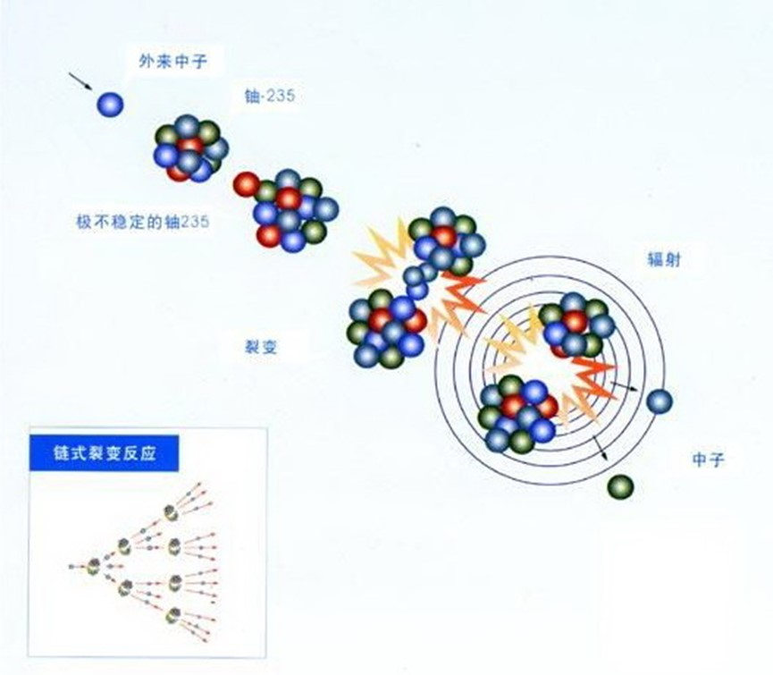
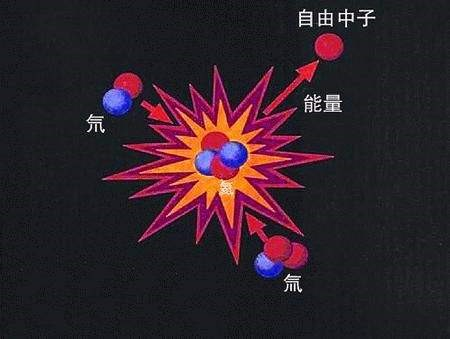

中核集团
2017年核科普开放周活动之第二届全国高校学生课外“核+X”创意大赛
核+动力
主页
概况
核能
核动力
核反应堆
概况
压水堆
基本构成——核能生成系统
主冷却剂系统——内能转换系统
二回路系统——动能输出系统
安全壳
核电站
概况
中国核电站
潜艇核动力装置
概况
中国核潜艇
水面船舰核动力装置
概况
中国核动力航母
空间核能装置
概况
空间核电源
空间核推进装置
发展和研究前景
中、小型核动力发展情况介绍
中、小核动力未来研究的方向
结论
核能
核能（或称原子能）是通过核反应从原子核释放的能量，符合阿尔伯特·爱因斯坦的质能方程E=mc²，其中E=能量，m=质量，c=光速。核能可通过三种核反应之一释放：
1.核裂变，较重的原子核分裂释放结合能。
核裂变
2.核聚变，较轻的原子核聚合在一起释放结合能。
核聚变
3.核衰变，原子核自发衰变过程中释放能量。
核能有巨大威力。1公斤铀原子核全部裂变释放出来的能量，约等于2700吨标准煤燃烧时所放出的化学能。一座100万千瓦的核电站，每年只需25吨至30吨低浓度铀核燃料，运送这些核燃料只需10辆卡车；而相同功率的煤电站，每年则需要300多万吨原煤，运输这些煤炭，要1000列火车。核聚变反应释放的能量则更巨大。据测算1公斤煤只能使一列火车开动8米；一公斤裂变原料可使一列火车开动4万公里；而1公斤聚变原料可以使一列火车行驶40万公里，相当于地球到月球的距离。
地球上蕴藏着数量可观的铀、钍等裂变资源，如果把它们的裂变能充分利用，可以满足人类上千年的能源需求。在大海里，还蕴藏着不少于20万亿吨核聚变资源——氢的同位元素氘，如果可控核聚变在21世纪前期变为现实，这些氘的聚变能将可顶几万亿亿吨煤，能满足人类百亿年的能源需求。更可贵的是核聚变反应中几乎不存在放射性污染。聚变能称得上是未来的理想能源。因此，人类已把解决资源问题的希望，寄托在核能这个能源世界未来的巨人身上了。
因此，核能具有巨大的应用价值和开发价值，而要将核能转换成能为我们所能直接利用的能量，需要借助核能转化装置，而核反应堆则是核能转化装置的中心枢纽。